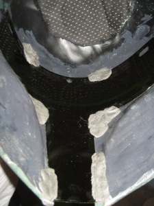

10 Ways to Lose Weight Without ‘Dieting’
2021.06.21 13:19

Skip to main content Coronavirus Update Check Your Symptoms Find A Doctor Find A Dentist Connect to Care Find Lowest Drug Prices Health
A-Z Health A-Z Health A-Z Common Conditions ADD/ADHD Allergies Arthritis Cancer Coronavirus (COVID-19) Depression Diabetes Eye Health Heart Disease Lung Disease Orthopedics Pain Management Sexual Conditions Skin Problems Sleep Disorders View All Resources Symptom Checker WebMD Blogs Podcasts Newsletters Questions & Answers Insurance Guide Find a Doctor Children's Conditions A-Z Surgeries and Procedures A-Z Featured Topics Symptom Checker COVID-19: Check Your Symptoms Now Slideshow Get Help for Migraine Relief Drugs &
Supplements Drugs & Supplements Drugs & Supplements Find & Review Drugs Supplements Drug Basics & Safety Commonly Abused Drugs Taking Meds When Pregnant Tools Manage Your Medications Pill Identifier Check for Interactions Drug Comparison Tool Featured Topics Slideshow Vitamins You Need as You Age Coronavirus COVID-19 Vaccines Living
Healthy Living Healthy Living Healthy Diet, Food & Fitness Diet & Weight Management Weight Loss & Obesity Food & Recipes Fitness & Exercise Beauty & Balance Healthy Beauty Health & Balance Sex & Relationships Oral Care Living Well Women's Health Men's Health Aging Well Healthy Sleep Healthy Teens Featured Topics Article Smart Grocery Shopping When You Have Diabetes Quiz Do You Know the Benefits of Walking? Family &
Pregnancy Family & Pregnancy Family & Pregnancy All About Pregnancy Getting Pregnant First Trimester Second Trimester Third Trimester View All Parenting Guide Newborn & Baby Children's Health Children's Vaccines Raising Fit Kids View All Pet Care Essentials Healthy Cats Healthy Dogs View All Featured Topics Slideshow Smart Snacks When You're Pregnant Slideshow Surprising Things You Didn't Know About Dogs and Cats News &
Experts News & Experts News & Experts Health News Coronavirus News & Updates COVID-19 Vaccines -- Latest Updates Coronavirus in Context: Interviews With Experts What You Should Know About the Delta Variant Combo COVID, Flu Shot Appears Safe & Effective Experts & Community WebMD Blogs News Center Featured Topics Special Report CRISPR and the End of Genetic Diseases Get Our Newsletters Health News and Information, Delivered to Your Inbox Mobile Apps Subscriptions Sign In Subscribe My Profile My Tools My WebMD Pages My Account Sign Out
Diet & Weight Management
Home News Reference Slideshows Quizzes Videos Questions & Answers Diet Plans A-ZHealth & Diet Guide
Popular Diet Plans Healthy Weight Tools and Calculators Healthy Eating & Nutrition Best & Worst Choices All Guide TopicsRelated Topics
Weight Loss & Obesity Fitness & Exercise Food & Recipes Food Calculator BMI Calculator Diabetes Cholesterol Management More Related Topics Diet & Weight Management Feature StoriesManaging High Potassium While on Dialysis
Managing High Potassium While on Dialysis
10 Ways to Lose Weight Without Dieting
Simple changes to your lifestyle can help you lose weight and keep it off.
By Kathleen M. Zelman, MPH, RD, LD From the WebMD ArchivesSure, you can lose weight quickly. There are plenty of fad diets that work to shed pounds rapidly -- while leaving you feeling hungry and deprived. But what good is losing weight only to regain it? To keep pounds off permanently, it's best to lose weight slowly. And many experts say you can do that without going on a "diet." Instead, the key is making simple tweaks to your lifestyle.
One pound of fat -- is equal to 3,500 calories. By shaving 500 calories a day through dietary and exercise modifications, you can lose about a pound a week. If you only need to maintain your current weight, shaving 100 calories a day is enough to avoid the extra 1-2 pounds most adults gain each year.
Adopt one or more of these simple, painless strategies to help lose weight without going on a "diet":
Eat Breakfast Every Day. One habit that's common to many people who have lost weight and kept it off is eating breakfast every day. "Many people think skipping breakfast is a great way to cut calories, but they usually end up eating more throughout the day, says Elizabeth Ward, MS, RD, author of The Pocket Idiot's Guide to the New Food Pyramids . "Studies show people who eat breakfast have lower BMIs than breakfast-skippers and perform better, whether at school or in the boardroom." Try a bowl of whole-grain cereal topped with fruit and low-fat dairy for a quick and nutritious start to your day. Close the Kitchen at Night. Establish a time when you will stop eating so you won't give in to the late-night munchies or mindless snacking while watching television. "Have a cup of tea, suck on a piece of hard candy or enjoy a small bowl of light ice cream or frozen yogurt if you want something sweet after dinner, but then brush your teeth so you will be less likely to eat or drink anything else," suggests Elaine Magee, MPH, RD, WebMD's "Recipe Doctor" and the author of Comfort Food Makeovers . Choose Liquid Calories Wisely. Sweetened drinks pile on the calories, but don't reduce hunger like solid foods do. Satisfy your thirst with water, sparkling water with citrus, skim or low-fat milk, or small portions of 100% fruit juice. Try a glass of nutritious and low-calorie vegetable juice to hold you over if you get hungry between meals. Be careful of alcohol calories, which add up quickly. If you tend to drink a glass or two of wine or a cocktail on most days, limiting alcohol to the weekends can be a huge calorie saver. Eat More Produce. Eating lots of low-calorie, high-volume fruits and vegetables crowds out other foods that are higher in fat and calories. Move the meat off the center of your plate and pile on the vegetables. Or try starting lunch or dinner with a vegetable salad or bowl of broth-based soup, suggests Barbara Rolls, PhD, author of The Volumetrics Eating Plan . The U.S. government's 2005 Dietary Guidelines suggest that adults get 7-13 cups of produce daily. Ward says that's not really so difficult: "Stock your kitchen with plenty of fruits and vegetables and at every meal and snack, include a few servings," she says. "Your diet will be enriched with vitamins , minerals, phytonutrients , fiber, and if you fill up on super-nutritious produce, you won't be reaching for the cookie jar." Go for the Grain. By substituting whole grains for refined grains like white bread, cakes, cookies, and pretzels, you add much-needed fiber and will fill up faster so you're more likely to eat a reasonable portion. Choose whole-wheat breads and pastas, brown rice, bran flakes, popcorn, and whole-rye crackers. Control Your Environments. Another simple strategy to help cut calories is to control your environment -- everything from stocking your kitchen with lots of healthy options to choosing the right restaurants. That means avoiding the temptation by staying away from all-you-can-eat restaurants. And when it comes to parties, "eat a healthy snack before so you won't be starving, and be selective when you fill your plate at the buffet," suggests Ward. Before going back for more food, wait at least 15 minutes and have a big glass of water. Trim Portions. If you did nothing else but reduce your portions by 10%-20%, you would lose weight. Most of the portions served both in restaurants and at home are bigger than you need. Pull out the measuring cups to get a handle on your usual portion sizes , and work on paring them down. Get instant portion control by using small bowls, plates, and cups, says Brian Wansink, PhD, author of Mindless Eating. You won't feel deprived because the food will look plentiful on dainty dishware. Add More Steps. Get yourself a pedometer and gradually add more steps until you reach 10,000 per day. Throughout the day, do whatever you can to be more active -- pace while you talk on the phone, take the dog out for an extra walk, and march in place during television commercials. Having a pedometer serves as a constant motivator and reminder. Have Protein at Every Meal and Snack. Adding a source of lean or low-fat protein to each meal and snack will help keep you feeling full longer so you're less likely to overeat. Try low-fat yogurt, small portion of nuts, peanut butter, eggs, beans, or lean meats. Experts also recommend eating small, frequent meals and snacks (every 3-4 hours), to keep your blood sugar levels steady and to avoid overindulging. Switch to Lighter Alternatives. Whenever you can, use the low-fat versions of salad dressings, mayonnaise, dairy products, and other products. "You can trim calories effortlessly if you use low-fat and lighter products, and if the product is mixed in with other ingredients, no one will ever notice," says Magee. More smart substitutions: Use salsa or hummus as a dip; spread sandwiches with mustard instead of mayo; eat plain roasted sweet potatoes instead of loaded white potatoes; use skim milk instead of cream in your coffee; hold the cheese on sandwiches; and use a little vinaigrette on your salad instead of piling on the creamy dressing. WebMD Weight Loss Clinic-FeatureSources
SOURCES: WebMD Feature: "With Fruits and Veggies, More Matters." 2005 U.S. Dietary Guidelines. Elizabeth Ward, MS, RD, author, The Pocket Idiot's Guide to the New Food Pyramids. Elaine Magee, MPH, RD,author, Comfort Food Makeovers . Brian Wansink, PhD, professor and director, Cornell Food and Brand Lab, Ithaca, N.Y.; author, Mindless Eating. Barbara Rolls, PhD, professor of nutritional sciences; and director, laboratory for the study of human ingestive behaviors, Penn State University; and author, The Volumetrics Eating Plan.
© 2007 WebMD, Inc. All rights reserved.Top Picks
10 Worst Sandwiches and Better Choices Guide to Eating Healthy Carbs Becoming a Vegetarian: Foods to Choose From Why Am I Always Hungry? Surprising Reasons You're Gaining Weight Diet Tips for Knee OsteoarthritisToday On WebMD
Boost Your Metabolism: 10 Ways to Do It
Belly Fat: Best & Worst Foods
Worst Sandwiches: Avoid These Diet Wreckers
Best Diet Tips Ever: 22 Ways to Stay on Track
Recommended for You
Slideshow9 Seeds You Should Be Eating
Slideshow9 Ways to Eat Clean
SlideshowFoods You Can't Stop Eating -- But Should
SlideshowLose Weight Without Dieting
SlideshowWorst Restaurant Meals
SlideshowSurprising Reasons You're Gaining Weight
SlideshowWhat Is a Gluten-Free Diet?
SlideshowTruth About Sugar Cravings
SlideshowFat-Fighting Foods
Slideshow25 Low-Calorie Snacks
SlideshowHigh-Protein Diets
SlideshowLow-Carb Snacks
Tools & Resources
Do High-Protein Diets Work? Weight-Loss Dos and Don'ts Best and Worst Juices 10 Ways to Control Your Eating Guide to Becoming Vegetarian Best and Worst AppetizersGet Diet and Fitness Tips In Your Inbox
Eat better and exercise smarter. Sign up for the Food & Fitness newsletter.
By clicking Subscribe, I agree to the WebMD Terms & Conditions & Privacy Policy and understand that I may opt out of WebMD subscriptions at any time.Health Solutions
Penis Curved When Erect? Could I have CAD? Treat Bent Fingers Treat HR+, HER2- MBC Tired of Dandruff? Benefits of CBD Rethink MS Treatment AFib-Related Strokes Risk of a Future DVT/PE Is My Penis Normal? Relapsing MS Options Liver Transplants Save Lives Finance Plastic Surgery Bent Finger Causes Living With Psoriasis? Missing Teeth?More from WebMD
5 Tips to Help With Relapsing MS How to Thrive With Narcolepsy Relief for Blocked Hair Follicles Psoriatic Arthritis and Your Sleep What Psoriasis Feels Like First Psoriatic Arthritis Flare Talking to Your Doctor About RA Crohn's: A 'Full-Body' Disease Avoiding Crohn’s Flares Health Benefits of Hemp Seed Oil Live Better With Psoriatic Disease Types of B-Cell Therapy for MS 5 Health Benefits of Hemp Why Prostate Cancer Spreads Living with Advanced Breast Cancer Where Breast Cancer Spreads Visit WebMD on Facebook Visit WebMD on Twitter Visit WebMD on PinterestPolicies
Privacy Policy Cookie Policy Editorial Policy Advertising Policy Correction Policy Terms of UseAbout
Contact Us About WebMD Careers Newsletter Corporate WebMD Health Services Site Map AccessibilityWebMD Network
Medscape Medscape Reference MedicineNet eMedicineHealth RxList OnHealth WebMDRx First Aid WebMD Magazine WebMD Health Record Dictionary Physician DirectoryOur Apps
WebMD Mobile WebMD App Pregnancy Baby Allergy MedscapeFor Advertisers
Advertise with Us Advertising Policy© 2005 - 2019 WebMD LLC. All rights reserved.
WebMD does not provide medical advice, diagnosis or treatment.
See additional information.
- 12 tips to help you lose weight - NHS
- How to Lose Weight | CSIRO Total Wellbeing Diet
- Intermittent fasting may not be the best way to lose weight .
- How to Lose Weight Fast - Quick & Easy Weight Loss Tips
- Top 25 Ways To Lose Weight Fast At Home (Expert's Guide .
- 12 tips to help you lose weight - NHS
- How to Lose Weight Fast — The Truth About Dropping Up to 5 .
- How to Lose Weight – Top 18 Simple Tips – Diet Doctor
- The best way to lose weight boils down to these three things
- The best way to lose weight boils down to these 5 principles
- 12 tips to help you lose weight - NHS
- How to Lose Weight | CSIRO Total Wellbeing Diet
- Intermittent fasting may not be the best way to lose weight .
· - How to Lose Weight Fast - Quick & Easy Weight Loss Tips
- Top 25 Ways To Lose Weight Fast At Home (Expert's Guide .
- 12 tips to help you lose weight - NHS
- How to Lose Weight Fast — The Truth About Dropping Up to 5 .
- How to Lose Weight – Top 18 Simple Tips – Diet Doctor
- The best way to lose weight boils down to these three things
8 janv. 2021 — - The best way to lose weight boils down to these 5 principles
·
8 janv. 2021 —
